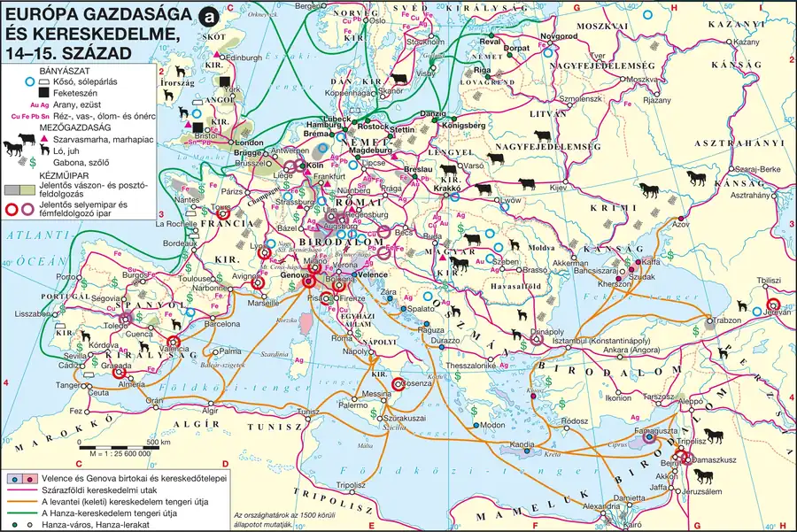

Agrárforradalom: a mezőgazdaság átalakulása
Meg tudod nevezni a X–XIII. századi mezőgazdasági fellendülés technikai és szervezeti újításait, és be tudod mutatni, hogyan vezetett a terményfelesleg a városok kialakulásához. Ez a modul adja az egész témakör ok-okozati alapját: a városok nem „maguktól” jöttek létre.
A kiindulópont: önellátó gazdaság
A Nyugatrómai Birodalom bukása (476) után Európa gazdasága évszázadokra visszaesett. A városi élet elsorvadt, a pénzhasználat háttérbe szorult, a termelés célja nem a piac, hanem a saját szükséglet kielégítése lett: ezt nevezzük naturális gazdálkodásnak. Az uralkodó művelési mód a talajváltó (legelőváltó) rendszer volt: az erdőirtással nyert földet addig művelték, amíg ki nem merült, majd elhagyták, és új területet vontak művelés alá — sok földet és állandó vándorlást igényelt, alacsony hozam mellett.
Technikai újítások
A VIII. századtól — először a nagy kolostorok birtokain — sorra jelentek meg azok az újítások, amelyek együttesen megsokszorozták a termelést. Fontos látni, hogy ezek egymást feltételezték: külön-külön egyik sem lett volna elegendő.
- Nehéz, csoroszlyás, kormánylemezes eke: mélyen megforgatta a talajt, így alkalmas volt a kötött, nehéz észak-európai földek művelésére, és nem kellett keresztirányban újraszántani.
- Új fogatolás: a nyakhám helyett a szügyhám nem fojtotta a vonóállatot, így a húzóerő többszörösére nőtt. Ehhez társult a patkó elterjedése.
- Vízimalom és szélmalom: az őrlés gépesítése munkaerőt szabadított fel.
- Nyomásos gazdálkodás: előbb a kétnyomásos (szántó + ugar), majd a háromnyomásos rendszer (őszi vetés + tavaszi vetés + ugar). Nyugat-Európában a X–XI. századra a háromnyomásos vált általánossá, Dél-Európában megmaradt a kétnyomásos.
A háromnyomásos rendszer előnye kettős: a terület kétharmada állt művelés alatt a fele helyett, és a tavaszi vetésben megjelent a zab, ami lehetővé tette a ló szélesebb körű használatát igavonó állatként. A trágyázás és a vetésforgó együtt megszüntette a vándorlási kényszert.
Extenzív fejlődés
Az új módszerek (intenzív fejlődés) mellett a művelésbe vont területek megsokszorozódása (extenzív fejlődés) is döntő volt: erdőirtás, gyeptörés, mocsárlecsapolás, Flandriában tengertől való területhódítás. A XI–XIII. század Európa nagy belső gyarmatosításának kora.
Kötelező adatok
| Fogalmak | Évszámok | Topográfia |
|---|---|---|
| naturális gazdálkodás, talajváltó rendszer, nyomásos gazdálkodás, ugar, nyomáskényszer, dűlő, szügyhám, nehézeke, árutermelés | 476–1492: a középkor VIII. sz.: a nyomásos gazdálkodás terjedése X–XI. sz.: a háromnyomásos rendszer általánossá válása XI–XIII. sz.: nagy erdőirtások, népességnövekedés |
Nyugat-Európa (Franciaország, Flandria, Anglia); Dél-Európa (kétnyomásos gazdálkodás) |
1. forrás
A rendelet előírja, hogy a birtokok intézői minden évben pontos jegyzéket készítsenek a termésről, az állatállományról és a beszolgáltatott javakról, és azt karácsonyra küldjék meg az uralkodónak. Meghatározza, hogy a birtokokon milyen műhelyeknek kell működniük: legyen kovács, ács, szíjgyártó, valamint sör-, illetve borkészítésre alkalmas felszerelés. Elrendeli, hogy a birtok maga állítsa elő mindazt, amire szüksége van, és csak a fölösleget adják el.
- Nevezze meg a forrás alapján a kora középkori gazdálkodás azon jellemzőjét, amelyet naturális gazdálkodásnak nevezünk! Idézze az alátámasztó részt!
- Milyen célt szolgálhatott a részletes jegyzékkészítés előírása?
- Mit árul el a forrás arról, hol folyt a kora középkorban a kézműves termelés? Miben tér el ettől a XII. századi helyzet?
Ellenőrző feladatok
Az uradalom és a jobbágyság
Be tudod mutatni az uradalom felépítését, fel tudod sorolni a jobbágyi szolgáltatásokat és a jobbágy jogait, és értékelni tudod a földesúr–jobbágy viszony kettősségét: a függés és a védelem együttes jelenlétét.
Hűbériség és társadalmi rendek
A középkori Nyugat-Európa társadalma az antik római és a barbár germán örökség találkozásából jött létre. A rómaiaktól származott a nagybirtok (latifundium), a latin nyelv és a kereszténység; a germánoktól a kíséret intézménye. Ebből alakult ki a hűbériség: a hűbérúr (senior) hűbérbirtokot adott a hűbéresnek (vazallus), aki ezért katonai szolgálattal és tanáccsal tartozott. A kortársak a társadalmat három rendre osztották: az imádkozók (oratores), a harcolók (bellatores) és a dolgozók (laboratores) rendjére — a dolgozók rendje azonban nem volt része a hűbéri láncolatnak.
EA földesurak igyekeztek birtokaikra immunitást, azaz a királyi jogok alóli mentességet szerezni. Ahol ez sikerült, ott királyi tisztviselő nem szedhetett adót, a földesúr viszont eredendően királyi jogokat gyakorolhatott: bíráskodhatott, vásárt tarthatott, vámot szedhetett, bányát nyithatott.
Az uradalom felépítése
Az uradalom nagy kiterjedésű, de nem feltétlenül összefüggő földterület, amely falvak tucatjait fogta össze. Központja kezdetben az udvarház, a X. századtól egyre inkább a vár. Nem pusztán nagybirtok volt, hanem hatalmi szervezet is: igazgatási és bíráskodási feladatokat látott el.
| Az uradalom része | Ki használja? | Kié a termés? |
|---|---|---|
| Jobbágytelkek (belső telek: házhely, kert; külső telek: szántó) | a jobbágycsalád, saját eszközeivel | a jobbágyé, de szolgáltatásokkal tartozik érte |
| Majorság (allódium) a földesúr saját kezelésű birtoka | a jobbágyok művelik robotban | teljes egészében a földesúré |
| Közös használatú területek erdő, legelő, kaszáló, folyó | a falu közössége | a használatért külön díj jár a földesúrnak |
A szántóföldeket dűlőkre osztották, a parcellákat évente sorsolással osztották szét — így mindenki kapott jó és gyengébb földet is. A dűlőn belül érvényes volt a nyomáskényszer. Ennek két oka volt: a különböző nyomások zavarták volna egymást (az ugaron legelő állatok lelegelhették volna a szomszédos vetést), másrészt a nehézeke vontatásához 4–6 ökör kellett, amennyit egy jobbágy ritkán tartott — vagyis össze kellett fogni, ez pedig csak azonos munkarend mellett volt megszervezhető.
A jobbágy jogai és kötelezettségei
A jobbágyság a XI. századra állt össze jogilag egységesülő réteggé a lesüllyedő szabadokból, a római colonusok utódaiból és a felszabadított rabszolgákból. A jobbágy örökíthető telekkel rendelkezett, amelynek azonban csak birtokosa (használója) volt — a tulajdonos a földesúr maradt.
| Kötelezettségek | Jogok |
|---|---|
| Terményjáradék — a termés meghatározott hányada (a tized az egyházat illette) | Örökíthető telekhasználat: a telket örökölhette, sőt eladhatta |
| Pénzjáradék — rendszeres pénzadó, a pénzgazdálkodás fejlődésével egyre nagyobb súllyal | Szabad költözés joga (tartozásai rendezése után) |
| Munkajáradék (robot) — a majorsági földek megművelése | A szokásjog védelme a földesúri túlkapásokkal szemben |
| Ajándék a földesúr életének nagyobb eseményein | Az uradalom nyújtotta katonai és jogi védelem |
| EBanalitások — a földesúri monopóliumok (malom, kocsma, mészárszék, sörfőzés) kötelező igénybevétele | Saját eszközeivel, saját döntése szerint gazdálkodhatott telkén |
A jobbágy személyében is függött urától: a földesúr bíráskodott felette (úriszék), és a házasodáshoz is engedélyére volt szükség. A viszony ugyanakkor nem egyoldalú: a szokásjog rögzítette a szolgáltatások mértékét, és a földesúrnak érdeke fűződött ahhoz, hogy jobbágyai életképesek maradjanak.
Sok tankönyvi vázlat felsorolja a földesúri jogok között az „első éjszaka jogát” (ius primae noctis). A mai történettudomány álláspontja szerint gyakorlásáról nincs megbízható korabeli bizonyíték: nagy valószínűséggel késő középkori–újkori irodalmi toposzról van szó. Ha egy forrás erre hivatkozik, érdemes jelezni a keletkezés idejét és a szerző szándékát — az ilyen megjegyzés a „történelmi gondolkodás” szempontnál értékelhető.
2. forrás
Az összeírás birtokrészenként sorolja fel a rajta élő család nevét, a földterület nagyságát és a járandóságokat. Egy tipikus bejegyzés szerint a család a maga telke után évente meghatározott számú napot köteles az apátság saját földjén dolgozni, ezenkívül szántanivaló földdarabot művelni, kocsival fuvarozni, továbbá bort, sertést, tyúkot és tojást beszolgáltatni. A szolgáltatások mértékét a telek nagyságához és nem a család vagyonához igazítják.
- Csoportosítsa a szolgáltatásokat a három járadéktípus szerint! Melyik típus hiányzik, és ez mit árul el a korszak gazdaságáról?
- Mit jelent, hogy a szolgáltatásokat a telek nagyságához igazították? Milyen érdeke fűződött ehhez a földesúrnak?
- Milyen forrástípusba tartozik az összeírás? Mennyiben megbízhatóbb egy elbeszélő forrásnál a jobbágyi terhek vizsgálatakor?
Ellenőrző feladatok
A város születése és kiváltságai
Meg tudod különböztetni az ókori és a középkori várost, fel tudod sorolni a városi kiváltságokat, és be tudod mutatni, hogyan vívta ki a városi közösség (kommuna) az önkormányzatot.
Ókori vagy középkori város?
Az ókori város népes település, hatalmi és igazgatási központ, amelynek lakói nem (csak) mezőgazdaságból éltek. A középkori város lényege ennél más: az országon belüli jogi önállóság, az önkormányzat. Ez a legfontosabb különbség, és az esszében is ezzel érdemes kezdeni. A város a feudális rendszer szempontjából „idegen test” volt: a feudális társadalomban mindenki vagy nemes, vagy egyházi személy, vagy jobbágy — a polgár egyikbe sem illett bele.
Hol és miből lettek városok?
A népvándorlás során az antik városok többsége elpusztult vagy elnéptelenedett. Az új városok a X–XIII. század között tömegesen jöttek létre, elsősorban Észak-Itáliában, Franciaországban, Angliában, Flandriában és a Baltikumban. Tipikus helyszíneik:
- egykori római települések helyén (a falak és utak megmaradtak);
- várak és egyházi központok tövében, ahol vásárt tartottak;
- kereskedelmi utak találkozásánál, folyami átkelőknél, kikötőkben;
- zarándokutak állomásain, ahol a szállás- és vásárhelyek biztonságot és piacot jelentettek.
A távolsági kereskedők személyük és áruik védelmére közösségeket (gildéket) hoztak létre; hozzájuk csatlakoztak azok a kézművesek, akik a mezőgazdasági árutermelés fejlődése miatt már iparosként is meg tudtak élni. E telepek lakói azután a kereskedők vezetésével új közösségeket, kommunákat szerveztek.
A kiváltságok kivívása
A városi jogokat rendszerint ki kellett harcolni a város világi vagy egyházi birtokosától. A kommunák pénzzel, ha kellett, fegyverrel vívták ki önállóságukat; a mozgalom különösen erős volt Flandriában, Észak-Itáliában és a Rajna-vidéken (Cambrai 1077, Laon 1112). Az uralkodók gyakran támogatták a törekvéseket, mert bennük a hűbérurakkal szemben szövetségest és megbízható adófizetőt láttak. Ez kulcsösszefüggés: a városok felemelkedése és a királyi hatalom megerősödése ugyanannak a folyamatnak a két oldala.
A városi kiváltságok
| Kiváltság | Mit jelent? | Miért fontos? |
|---|---|---|
| Önkormányzat joga | a polgárok közössége maga választja elöljáróit (bíró, polgármester, tanács) | a város kikerül a földesúri igazgatás alól |
| Szabad bíróválasztás és bíráskodás | saját joghatóság a város területén és lakói felett | a polgárt nem az úriszék ítéli meg |
| Adózás egy összegben | a város egy tételben fizeti adóját | a belső elosztás a város dolga |
| Vásártartás joga | heti piac és országos vásár | a város a környék gazdasági központja lesz |
| Árumegállító jog | az áthaladó kereskedőt áruja helyben tartó árusítására kötelezi | a helyi kereskedők előnyhöz jutnak |
| Szabad plébánosválasztás (kegyúri jog) | a polgárok maguk választják papjukat | egyházi téren is önállóság |
| Vámmentesség; falépítés, birtokjog | vámkedvezmény, városfal, saját falvak | védelem és gazdasági háttér |
A kiváltságokat négy szó köré érdemes rendezni: ÖNKORMÁNYZAT — BÍRÁSKODÁS — GAZDASÁG — EGYHÁZ. Ha a felelet e négy csoport köré épül, a „szaknyelv” és a „történelmi ismeretek” szempontnál is előnyt jelent.
A város képe
A várost fallal vették körül — a falépítés maga is kiváltság volt. A falak közé szorított területen emeletes házakat építettek, keskeny, kövezetlen sikátorokkal. Csatornázás nem volt. A központ a piactér, itt állt a városháza és a főtemplom. Nyugat-Európa városainak átlagos lakossága 4–5 ezer fő körül mozgott; a távolsági kereskedelembe bekapcsolódó nagyvárosokban 10–15 ezren éltek. (Összehasonlításul: az ókori Róma lakossága a császárkorban elérte az egymilliót.) A zsúfoltság és a rossz higiénia miatt a városok a járványok melegágyai voltak.
3. forrás
Az oklevél szerint a városalapító úr piacot létesít, és mindenkinek, aki oda letelepszik, telket ad meghatározott évi bér fejében. A letelepülőknek szabad kereskedést és a saját maguk választotta bíró ítélkezését biztosítja. Kimondja, hogy aki egy éven és egy napon át háborítatlanul a városban él, azt szabad embernek kell tekinteni, és korábbi ura nem követelheti vissza. Megígéri továbbá, hogy a kereskedők áruik után a városban nem fizetnek vámot.
- Sorolja fel, milyen kiváltságokat biztosít a forrás! Csoportosítsa gazdasági és jogi jellegű jogokra!
- Milyen érdeke fűződött a városalapító úrnak ahhoz, hogy ilyen kedvezményeket adjon? Két okot fogalmazzon meg!
- Melyik rendelkezéshez kapcsolódik a „A városi levegő szabaddá tesz” mondás? Milyen társadalmi folyamatra utal?
- EA mondás mai formája újkori összefoglalása a középkori gyakorlatnak. Miért kell óvatosan bánni az ilyen szállóigékkel a történeti elemzésben?
Ellenőrző feladatok
A városi társadalom és a céhek
Be tudod mutatni a városi társadalom rétegződését, és részletesen ismerteted a céhek működését: a szakmai szabályozást, a mesterré válás útját és a céhek városi szerepét. Meg tudod fogalmazni a céhrendszer kettős — védelmező és korlátozó — természetét.
Ki a polgár?
A városlakó szabad ember volt, viszont vagyona arányában adót fizetett. Fontos a pontos fogalomhasználat: a városlakóknak csak kisebb része volt polgár. Polgárjogot általában csak ingatlantulajdonos szerezhetett — elsősorban az önálló műhellyel rendelkező iparosmesterek, a kereskedők és a háztulajdonosok.
| Réteg | Kik tartoztak ide? | Jogi-politikai helyzet |
|---|---|---|
| Patríciusok | a leggazdagabb kereskedő- és bankárcsaládok | kezükben a városi tanács és a bírói tisztség; közülük került ki a polgármester |
| Polgárok | ingatlannal rendelkező iparosmesterek, kereskedők | polgárjog; a XIII. századtól a mesterek kivívták a beleszólást az irányításba |
| Plebs | legények, napszámosok, beköltöző jobbágyok | személyükben szabadok, de a városi politikából kizárva |
EA városvezetésben egyes családok idővel meghatározó befolyásra tehettek szert: Firenzében a bankárból városúrrá emelkedő Mediciek (a család vezető szerepe 1434-től), Milánóban a Sforzák.
A céhek: miért kellett szabályozni?
A céh az azonos szakmát űző mesterek érdekvédelmi és szakmai szervezete; teljes jogú tagja csak az önálló műhellyel rendelkező mester lehetett. A rendszer alapproblémája a szűk piac: a középkori város néhány ezer fős vevőkört jelentett, a szállítás drága és kockázatos. Ha a mesterek szabadon versenyeztek volna, néhányan tönkremennek. A céh ezért nem növelni, hanem elosztani akarta a piacot: célja az volt, hogy minden mester meg tudjon élni.
- Minőségi és mennyiségi előírások — milyen alapanyag, milyen szerszám, mennyi termék.
- Árszabályozás — az árak maximalizálása, hogy senki ne szoríthasson ki mást alákínálással.
- A munkaerő korlátozása — az inasok és legények száma, valamint bérük felső határa.
- A verseny eszközeinek tiltása — éjszakai munka és reklám tilalma, az ügyfélcsábítás bírsága.
- A mesterek számának meghatározása — csak annyi, amennyi meg is tud élni.
- A kontárok üldözése és a városkörnyéki falvakban az iparűzés tiltása.
A céh ugyanakkor védett is: közös kasszát tartott fenn, amelyből a mester betegsége vagy halála esetén támogatta a családot, és a szakmai színvonal őrzésével a vásárló érdekét is szolgálta.
A mesterré válás útja
| Fokozat | Mit csinál? | Mit kap? |
|---|---|---|
| Inas | 2–10 éven át egy mester mellett tanul, a mester házában él | szállás és ellátás, bér nem |
| Legény | felszabadulás után bérért dolgozik; vándorútra indul idegen városok mestereihez | bér, szállás |
| Mester | mesterremeket készít; ha elfogadják és van tőkéje, önálló lesz | műhely, céhtagság, polgárjog lehetősége |
A mesterré válást további akadályok is nehezítették: a kötelező lakoma költsége, a műhelynyitáshoz szükséges tőke, és az, hogy a céhek egyre gyakrabban részesítették előnyben a mesterek fiait. A késő középkorra ezért nőtt az „örökös legények” száma — a rendszer merevségének fontos jele.
A munka jellemzője, hogy nem volt munkamegosztás: egyetlen ember végezte el a munkadarabon az összes műveletet. A munkaidő hajnaltól napnyugtáig tartott, viszont az év mintegy harmada ünnepnap volt. Ez a szervezeti forma a XVI. századtól, a manufaktúrák megjelenésével válik korszerűtlenné — a céh–manufaktúra szembeállítás gyakori érettségi feladat.
4. forrás
A szabályzat kimondja, hogy a mesterségben senki nem dolgozhat, aki nem tagja a céhnek. Előírja, hogy a mester legfeljebb két inast tarthat egyszerre. Megtiltja, hogy bárki napnyugta után gyertyafénynél dolgozzék, mert így nem lehet gondos munkát végezni. Elrendeli, hogy az elkészült árut a céh elöljárói vizsgálják meg, a hibás munkát pedig el kell kobozni. Rögzíti, hogy aki tagtársa vevőjét elcsalja, bírságot fizet a céh közös ládájába; ebből a ládából segítik a beteg mestereket és az özvegyeket is.
- Készítsen táblázatot arról, a céhélet mely területeit szabályozza a forrás (munkaerő, munkaidő, minőség, verseny, szociális gondoskodás)!
- Nevezze meg azt a fogalmat, amellyel a céhen kívül dolgozó iparosokat illették!
- Milyen két, egymással ellentétesnek tűnő célt szolgálnak a szabályok? Fogalmazza meg a céhrendszer kettősségét!
- EVesse össze a céhek működését a XVI. századi manufaktúrával a munkamegosztás és a verseny szempontjából!
Ellenőrző feladatok
Helyi és távolsági kereskedelem
Meg tudod különböztetni a helyi és a távolsági kereskedelmet, be tudod mutatni a két nagy tengeri övezetet és összekötőjüket, a szárazföldi utakat. Ismered a Hanza és az itáliai kereskedővárosok szerepét, valamint a pénz- és hitelélet fejlődését.
Piac és vásár
A helyi kereskedelem a város és környéke közötti árucsere: a paraszt élelmiszert hozott, iparcikket vitt haza. Kétféle alkalom volt: a heti piac (helyi jelentőségű) és az évente egy-két alkalommal tartott országos vásár. A vásár szigorúan szabályozott esemény volt: az első napokban az árut csak felsorakoztatni lehetett; az árusítást a piaci felügyelő engedélyezte; a vitákat a piaci bíróság döntötte el; és érvényes volt a „vásár békéje” — a piacon senkit nem lehetett elfogni.
A távolsági kereskedelem két jellegzetessége
A közlekedés fejletlensége két dolgot határozott meg. Egyrészt szinte kizárólag luxusárukkal volt érdemes hosszú távra kereskedni, mert csak ezeknél térült meg a szállítás költsége és kockázata. Másrészt ahol lehetett, vízi úton szállítottak.
A levantei kereskedelem
A Levante (olaszul „napkelte”) a Földközi-tenger keleti medencéje. Innen érkezett a kínai selyem, az indiai gyapot és drágakő, valamint az indonéz fűszer — a karavánutak végpontjaiba (Bizánc, Antiochia, Alexandria), ahonnan hajóval szállították tovább. Cserébe Európa nemesfémet, nyersanyagot, később egyre inkább iparcikket (fegyver, posztó, bársony) adott: ez Európa gazdasági megerősödésének jele. A térség urai: a VII. századtól az arabok, a IX. századtól Bizánc, a XI. századtól — főleg a keresztes hadjáratok idejétől — Velence, Genova és Pisa. Velence hatalma a IV. keresztes hadjárat (1202–1204) után vált meghatározóvá.
Az északi–balti övezet és a Hanza
Keletről és északról nyersanyagok és élelmiszer érkeztek (prém, viasz, kátrány, borostyán, hering, gabona), nyugatról iparcikkek (flandriai posztó, fegyver, szerszám). Egyre nagyobb jelentőségű lett az angol gyapjú, a flandriai textilipar alapanyaga. A kereskedők egy-egy vállalkozás erejéig társultak: ezek voltak a hanzák. 1161-ben az Északi- és a Balti-tenger kereskedői szövetkeztek, a XIV. században pedig létrejött az az észak-német városszövetség, amelyet nagy kezdőbetűvel Hanzának nevezünk (Lübeck, Hamburg, Bréma, Rostock). Jellegzetes hajójuk a kogge.
A szárazföldi összeköttetés: Champagne
A két tengeri övezetet a szárazföldi kereskedelem kötötte össze. Kezdeményezői az észak-itáliai kereskedővárosok (gabonára, húsra, borra volt szükségük) és a flandriai posztóvárosok (piacra) voltak. Az észak–déli kereskedelem központja a Párizstól keletre fekvő Champagne grófság lett: a vásárok hosszan (akár 48 napig) tartottak, biztonságosak voltak, és jelentős pénzváltó, később hiteltevékenység is működött rajtuk. Az alpesi hágók megnyitása után a délnémet városok (Augsburg, Nürnberg) piacai élénkültek meg; Közép-Európa Bécsen keresztül kapcsolódott a hálózatba. A XIII. század végétől azonban közvetlen tengeri útvonal nyílt Genova és Brugge között — ez a champagne-i vásárok hanyatlásához vezetett.
Pénz, bank, hitel
A pénzkölcsönzés mellett — az ókor után ismét — megjelent az átutalás, a letét, majd a váltó, amellyel nem kellett készpénzt szállítani. Az itáliai bankárcsaládok európai hálózatot építettek ki; a firenzei aranyforint (1252-től) a kontinens vezető pénzévé vált. A kamatszedés egyházi tilalma miatt a hitelezés sokáig kerülő úton (például árfolyamkülönbség formájában) valósult meg.
5. forrás
Európa gazdasága és kereskedelme, 14–15. század
A kereskedelmi útvonalak, gazdasági központok és fontosabb árucikkek térbeli rendszere vizsgálható.

| Övezet | Keletről / északról | Nyugatról / délről |
|---|---|---|
| Levantei | selyem (Kína), gyapot és drágakő (India), fűszer (Indonézia) | nemesfém, nyersanyag, majd fegyver, posztó, bársony |
| Északi–balti | prém, viasz, kátrány, borostyán, hering, gabona, fa | flandriai posztó, fegyver, szerszám; angol gyapjú Flandriába |
| Szárazföldi | itáliai luxusáru és keleti fűszer észak felé | flandriai posztó dél felé; gabona, bor, hús Itáliába |
- Az atlasz XI–XIII. századi Európa-térképe segítségével nevezze meg a két tengeri övezetet összekötő útvonal legfontosabb állomásait!
- Milyen változás figyelhető meg abban, hogy Európa mit szállított a Levantéra? Mire következtethetünk ebből?
- Miért luxuscikkekkel kereskedtek elsősorban? Használja a „szállítási költség” kifejezést!
- EMilyen következménye lett a Genova–Brugge tengeri útvonalnak a champagne-i vásárokra?
Ellenőrző feladatok
Válság és átalakulás: a nagy pestisjárvány
Ismered a nagy pestisjárvány (1347–1352) okait és következményeit, és be tudod mutatni, hogyan alakította át a járvány a munkaerőpiacot, a jobbágyi szolgáltatásokat és a városi gazdaságot.
A XIV. század közepére a népességnövekedés elérte azt a határt, amelyet az akkori mezőgazdaság még el tudott tartani. Sorozatos rossz termések és éhínségek (1315–1317) gyengítették a lakosságot, amikor 1347-ben genovai hajókkal a Krím félszigetről Európába érkezett a pestis. A járvány 1347 és 1352 között végigsöpört a kontinensen, és a becslések szerint Európa népességének mintegy harmadát elpusztította.
A pusztítás nem véletlenül volt a legnagyobb a városokban: a zsúfoltság, a csatornázás hiánya és a patkányállomány ideális körülményeket teremtett. A járvány ugyanakkor a gazdaság szerkezetét is átalakította:
- Munkaerőhiány: a megfogyatkozott munkaerő értéke megnőtt, a bérek emelkedtek. Több uralkodó bérmaximáló rendeletekkel próbálta ezt megakadályozni — kevés sikerrel.
- A jobbágyi terhek átalakulása: Nyugat-Európában a földesuraknak kedvezőbb feltételeket kellett kínálniuk. Terjedt a robot pénzre váltása és a bérleti viszony; a személyi függés oldódott.
- Feszültségek és felkelések: a terhek visszaállítására tett kísérletek jobbágyfelkelésekhez vezettek (Jacquerie, 1358, Franciaország; Wat Tyler felkelése, 1381, Anglia).
- A városok újjáéledése: a XV. századra Nyugat-Európa gazdasága ismét fellendült; a fejlődés központjává (centrum) Flandria és az itáliai városok, mindenekelőtt Firenze váltak.
Fontos érettségi összefüggés: Kelet-Közép-Európában — így Magyarországon és Lengyelországban — a XV–XVI. században ezzel ellentétes irányú folyamat indult el: a jobbágyi terhek szigorodása és a röghöz kötés. Ez a „második jobbágyság”, amely már a kora újkor anyaga, de az összehasonlító esszéknél gyakran előkerül.
6. forrás
| Év | 1300 | 1350 | 1400 | 1450 | 1500 |
|---|---|---|---|---|---|
| Népességindex | 100 | 68 | 62 | 65 | 84 |
- Mikor következett be a legnagyobb visszaesés? Nevezze meg az esemény pontos évhatárait!
- Miért nem indult azonnal növekedésnek a népesség 1350 után? Két okot fogalmazzon meg!
- Milyen gazdasági következménye lett a munkaerő megfogyatkozásának?
- EMiért nem általánosítható Kelet-Közép-Európára a XV. századi tendencia?
Ellenőrző feladatok
Magyar városfejlődés
Meg tudod különböztetni a szabad királyi várost, a bányavárost és a mezővárost, ismered IV. Béla és Zsigmond várospolitikáját, és be tudod mutatni, miben tért el a magyar városfejlődés a nyugat-európaitól. Erre a modulra a középszintű írásbeli HOSSZÚ (magyar történelmi) esszéjénél és a szóbelin lehet szükség.
IV. Béla várospolitikája
Magyarországon a városiasodás nyugati mintára, de később és gyengébben indult meg. Fordulópontot a tatárjárás (1241–1242) utáni újjáépítés jelentett: IV. Béla tudatos telepítő- és várospolitikába kezdett, nyugatról hospeseket (vendégtelepeseket) hívott be, és kiváltságlevelekkel ösztönözte a fallal körülvett települések létrejöttét. 1244-ben a pesti polgárok kaptak kiváltságlevelet, amely szabad bíró- és plébánosválasztást, valamint vámkedvezményeket biztosított; a lakosság egy része később a védhetőbb budai várhegyre költözött.
A gazdasági alapot a mezőgazdasági árutermelés és a pénzgazdálkodás megerősödése adta. I. Károly pénzügyi reformjai (a nemesfémbányászat fellendítése, az aranyforint verése, a kapuadó és a harmincadvám bevezetése) tovább erősítették a városok szerepét.
A háromosztatú városhálózat
| Várostípus | Kitől függ? | Jellemzők, példák |
|---|---|---|
| Szabad királyi város | közvetlenül a királytól | teljes körű kiváltságok: fal, önkormányzat, szabad bíró- és plébánosválasztás, árumegállító jog, egy összegben fizetett adó, céhes ipar. Buda, Pozsony, Sopron, Nagyszombat, Kassa, Eperjes, Bártfa (a hét tárnoki város) |
| Bányaváros | közvetlenül a királytól | a nemesfém- és sóbányászathoz kötődő kiváltságolt települések: Körmöcbánya (arany), Selmecbánya (ezüst), Besztercebánya (réz) |
| Mezőváros (oppidum) | földesúri joghatóság alatt | mezőgazdasági jellegű, a kiváltságoknak csak szűkebb körével: legfontosabb az adó egy összegben történő megfizetése. Debrecen, Szeged, Kecskemét, Gyöngyös. Ide tartozott a városok többsége. |
Külön csoportot alkottak az erdélyi szász városok (Nagyszeben, Brassó, Beszterce) és a szepességi települések (Lőcse, Késmárk), amelyek sajátos, közösségi kiváltságokkal rendelkeztek.
Zsigmond várospolitikája
Luxemburgi Zsigmond a városokban a bárókkal szemben szövetségest látott. 1405-ben tanácskozásra hívta Budára a városok követeit, és dekrétumában kiváltságokkal (vásártartási és árumegállító jog), valamint a mértékrendszer egységesítésére tett kísérlettel támogatta őket. A XV. században a szabad királyi városok mellett gyors fejlődésnek indultak a mezővárosok is: itt bontakozott ki a leggyorsabban a mezőgazdasági árutermelés, mert a jobbágyi munka az egy összegben fizetett adó révén eredményesebbé vált.
Magyar és nyugat-európai fejlődés
| Szempont | Nyugat-Európa | Magyar Királyság |
|---|---|---|
| A városok sűrűsége | sűrű, egyenletes hálózat | ritka hálózat, kevés nyugati típusú város |
| A városok fő funkciója | ipari és kereskedelmi központ, céhes iparral | többségük mezőgazdasági jellegű mezőváros |
| A kiváltságok forrása | gyakran a kommuna harcolta ki a földesúrtól | többnyire királyi adományozás („felülről”) |
| A polgárság politikai súlya | jelentős, rendi képviselettel | csekély, alárendelt szerep az országgyűlésen |
| A jobbágyság XV–XVI. sz. | a személyi függés oldódása | a terhek szigorodása, majd röghöz kötés |
7. forrás
Az oklevél szerint a polgárok évente maguk választhatnak bírót, aki minden ügyükben ítélkezik; ha a bíró nem szolgáltat igazságot, a király elé lehet vinni az ügyet. A polgárok maguk választják plébánosukat is. Mentesülnek a vámok fizetése alól az ország területén, telkeiket szabadon örökíthetik és eladhatják, és kötelesek fegyveres férfiakat állítani a király hadjárataira.
- Sorolja fel, milyen kiváltságokat biztosít az oklevél! Melyik nyugat-európai jogelemnek felelnek meg ezek?
- Mi a lényeges különbség a magyar és a nyugat-európai kiváltságszerzés módjában? Használja a „kommuna” fogalmát!
- Milyen kötelezettséget ír elő a forrás? Miért volt ez fontos a királynak a tatárjárás után?
- EVesse össze IV. Béla és Zsigmond várospolitikáját a hatalmi érdekek szempontjából!
Ellenőrző feladatok
Fogalomtár és kronológia
Fogalomtár — gépeld be, amit keresel
Kronológia
Topográfia — mit kell megmutatni az atlaszban?
- Levantei hálózat: Alexandria, Bizánc (Konstantinápoly), Antiochia; a szállítást uraló itáliai városok: Velence, Genova, Pisa.
- Hanza-hálózat: Lübeck, Hamburg, Bréma, Rostock, Danzig; nyugati végpontja Brugge.
- Flandria posztóvárosai: Brugge, Gent, Ypres. Itália ipari és bankközpontja: Firenze.
- Szárazföldi összeköttetés: Champagne grófság; az Alpokon túl Augsburg, Nürnberg, Bécs.
- Magyarország: Buda, Pozsony, Sopron, Kassa, Bártfa; bányavárosok: Körmöcbánya, Selmecbánya, Besztercebánya; mezővárosok: Debrecen, Szeged.
Érettségi típusú komplex feladatok
A három feladat az írásbeli I. részének mintájára készült: forrásalapú, több részkérdésből áll, és részpontokra megy. Oldd meg papíron, majd nyisd meg a pontozott megoldást.
„A” forrás (uradalmi összeírás, IX. század): a telkes család évente meghatározott számú napot köteles a földesúr saját földjén dolgozni, terményt és baromfit beszolgáltatni, ügyeiben pedig az úr embere ítélkezik felette.
„B” forrás (városalapító oklevél, XII. század): a letelepülők maguk választják bírájukat, adójukat egy összegben fizetik, és aki egy éven és egy napon át háborítatlanul a városban él, szabadnak tekintendő.
- Nevezze meg, melyik forrás melyik társadalmi csoport helyzetét mutatja be! (2 pont)
- Töltse ki a táblázatot: ki bíráskodik; hogyan fizet adót; elköltözhet-e. (6 pont)
- Melyik forrásrészlet magyarázza, miért vonzotta a város a jobbágyokat? Idézze! (2 pont)
- Miért mondható, hogy a város „idegen test” volt a feudális rendszerben? (2 pont)
1. árucsoport: fűszer, selyem, gyapot, drágakő · 2. árucsoport: prém, viasz, hering, borostyán, gabona · 3. árucsoport: posztó, fegyver, szerszám
- Párosítsa az árucsoportokat a kereskedelmi övezetekkel! (3 pont)
- Nevezze meg azt a két itáliai várost, amely a XI. századtól a levantei tengeri szállítást uralta! (2 pont)
- Nevezze meg azt a francia grófságot, amely az észak–déli szárazföldi kereskedelem központja volt! (1 pont)
- Miért szállítottak elsősorban luxuscikkeket? (2 pont)
- ENevezzen meg egy okot, amely a champagne-i vásárok hanyatlásához vezetett! (2 pont)
„Aki a mesterséget űzni akarja, előbb két évig inasként szolgáljon, majd három évig legényként dolgozzék, és mutassa be munkáját az elöljáróknak. Éjjel senki ne dolgozzék. A mester kettőnél több inast ne tartson. Aki tagtársa vevőjét elcsalja, bírságot fizessen.”
- Nevezze meg a mesterré válás forrásban említett három állomását! (3 pont)
- Nevezze meg azt a két szabályt, amely a mesterek közötti versenyt korlátozta! (2 pont)
- Milyen célt szolgálhatott az éjszakai munka tilalma? Két okot! (2 pont)
- Hogyan nevezték a céhen kívül dolgozó iparost? (1 pont)
- Mi volt a céhszabályozás alapvető gazdasági oka? (2 pont)
Esszéírás — szerkezet, minta, szószámláló
A vizsga szerkezete
| Középszint | Emelt szint | |
|---|---|---|
| Írásbeli | 180 perc (egyben) | 240 perc (I. rész 100, II. rész 140) |
| I. rész | 12 rövid, forrásalapú feladat — 50 pont | 12 rövid feladat — 50 pont |
| II. rész | 2 esszé (1 rövid egyetemes + 1 hosszú magyar) — 50 pont | 3 esszé (rövid + hosszú + komplex) — 50 pont |
| Terjedelem | rövid: 100–130 szó; hosszú: 210–260 szó | rövid: 110–130; hosszú: 240–290; komplex: 290–340 |
| Szóbeli | kötelező, 50 pont, kb. 15 perc | 50 pont, kb. 20 perc |
A szóbeli hivatalos értékelési szempontjai: feladat megértése 4 · tájékozódás térben és időben 6 · kommunikáció, szaknyelv 10 · források használata 12 · történelmi gondolkodás és ismeretek 18 pont. Ha a feladatmegértés 0 pont, az egész felelet 0 pont — ezért az első mondat mindig a feladat kérdését hangozza vissza.
Kidolgozott rövid esszé — egyetemes, 1849 előtt
Mutassa be a források és ismeretei segítségével a középkori céhek működését és a városi gazdaságban betöltött szerepét! (rövid esszé, 100–130 szó)
Mintamegoldás · 126 szóA feladat a XIII–XV. századi nyugat-európai városok céhrendszerének bemutatását kéri. A céh az azonos szakmát űző mesterek érdekvédelmi és szakmai szervezete volt. Mivel a városi piac szűk maradt, a céh nem a versenyt, hanem a megélhetést biztosította: maximálta az árakat, korlátozta a mesterek, inasok és legények számát, tiltotta az éjszakai munkát, és üldözte a céhen kívül dolgozó kontárokat. A forrás szerint szigorú minőségi ellenőrzést is végzett, hiszen az elkészült árut elöljárók vizsgálták meg. A mesterré válás hosszú út volt: inasévek, vándorút, végül a mesterremek. A céh emellett szociális és katonai feladatot is ellátott, közös ládájából segítette az özvegyeket, és felelt a városfal egy szakaszáért. A céhrendszer így egyszerre védte és kötötte meg a városi ipart.
Miért működik? Az első mondat visszahangozza a feladatot, és megadja a teret és az időt. A szaknyelv pontos (céh, kontár, mesterremek, inas, legény). A forrásra kétszer is konkrétan hivatkozik. A záró mondat nem ismétel, hanem értékel — ez a „történelmi gondolkodás” szempontnál hoz pontot.
Kidolgozott hosszú esszé — magyar történelem, 1849 előtt
Mutassa be a középkori magyar városfejlődés sajátosságait a XIII–XV. században! Térjen ki a várostípusokra és az uralkodók várospolitikájára! (hosszú esszé, 210–260 szó)
Mintamegoldás · 233 szóA feladat a középkori magyar városfejlődés sajátosságainak bemutatását kéri a XIII–XV. században.
Magyarországon a városiasodás nyugat-európai mintára, de később és gyengébben indult meg. Fordulópontot a tatárjárás (1241–1242) utáni újjáépítés hozott: IV. Béla hospeseket telepített be, és kiváltságlevelekkel ösztönözte a városok megerősödését. Az 1244-es pesti kiváltságlevél — amint a forrás mutatja — szabad bíró- és plébánosválasztást, valamint vámmentességet biztosított. A gazdasági alapot a mezőgazdasági árutermelés és a pénzgazdálkodás fejlődése adta, amelyet I. Károly reformjai, a nemesfémbányászat fellendítése és az aranyforint verése erősítettek.
A magyar városhálózat háromosztatú volt. A legszélesebb kiváltságokkal a szabad királyi városok rendelkeztek (Buda, Pozsony, Sopron, Kassa, Bártfa): önkormányzat, saját bíráskodás, árumegállító jog, egy összegben fizetett adó és céhes ipar jellemezte őket. Külön csoportot alkottak a nemesfémbányászatra épülő bányavárosok (Körmöcbánya, Selmecbánya, Besztercebánya). A települések többsége azonban földesúri joghatóság alatt álló mezőváros volt — Debrecen, Szeged, Kecskemét —, amelynek legfontosabb kiváltsága az adó egy összegben történő megfizetése maradt.
Zsigmond a városokban a bárókkal szemben szövetségest látott: 1405-ben Budára hívta követeiket, egységesíteni próbálta a mértékrendszert, és vásártartási, valamint árumegállító joggal támogatta őket.
Összegzésként megállapítható, hogy a magyar városfejlődés sajátossága a kiváltságok „felülről”, királyi adományozás útján történő megszerzése, a nyugati típusú, céhes ipari városok csekély száma és a mezővárosi jelleg túlsúlya volt. Ennek következménye, hogy a polgárság nem vált a rendi politika meghatározó erejévé.
Írd meg te — élő szószámlálóval
A szöveg csak ebben a böngészőablakban él — frissítéskor elvész, ezért mentsd ki magadnak, ha megtartanád.
Gyakorló esszétémák
- E1 — Milyen tényezők tették lehetővé a középkori városok kialakulását a X–XIII. században? (rövid, 100–130 szó)
- E2 — Mutassa be a középkori uradalom felépítését és a jobbágyok kötelezettségeit! (rövid)
- E3 — Mutassa be a távolsági kereskedelem két nagy övezetét és összekapcsolódásukat! (rövid)
- E4 — Mutassa be a nagy pestisjárvány demográfiai és társadalmi következményeit! (rövid)
- EE5 — Hasonlítsa össze a nyugat-európai és a magyarországi városfejlődést a kiváltságszerzés módja, a városok funkciója és a polgárság politikai súlya szempontjából! (összehasonlító esszé)
Tételvázlat és vizsgáztatói kérdések
A középkori város és lakói, a város kiváltságai, a céhek, a helyi és távolsági kereskedelem.
A válaszában térjen ki a városok kialakulásának gazdasági feltételeire, a városi kiváltságokra, a városi társadalom rétegződésére és a céhek működésére! Használja a mellékelt forrásokat és az atlaszt!
Felelet-váz (kb. 15 perc)
| Perc | Rész | Tartalom |
|---|---|---|
| 0–1 | Bevezetés | A feladat megfogalmazása; Nyugat-Európa, X–XV. század. Kulcsállítás: a középkori város lényege nem a méret, hanem a jogi önállóság. |
| 1–4 | Előzmények | Nehézeke, szügyhám, háromnyomásos gazdálkodás → terményfelesleg → árutermelés → a kézművesek és kereskedők megélhetése. |
| 4–7 | Kialakulás, kiváltságok | Hol keletkeztek városok; kommunamozgalom; a négy kiváltságcsoport. Forráshasználat: a városalapító oklevél. |
| 7–10 | Városi társadalom | Patríciusok – polgárok – plebs; a polgárjog feltétele; városkép, higiénia, járványveszély. |
| 10–13 | Céhek | Cél, szabályozás, mesterré válás, szociális és katonai szerep. Forráshasználat: céhszabályzat. |
| 13–15 | Kereskedelem, zárás | Piac és vásár; levantei és Hanza övezet, Champagne. Atlasz. Zárás: a városok a feudális rend „idegen testeként” a polgárosodás bölcsői lettek. |
Várható vizsgáztatói kérdések
- Mi a legfontosabb különbség az ókori és a középkori város között?
- Miért támogatták az uralkodók gyakran a városok önállósodását?
- Milyen gazdasági okkal magyarázható, hogy a céhek korlátozták a termelést?
- Miért éppen a városokban pusztított legjobban a pestis?
- Nevezzen meg két, a levantei kereskedelmet uraló itáliai várost, és mutassa meg őket a térképen!
- Miben tért el a magyar városfejlődés a nyugat-európaitól?
- EMilyen szerepet játszottak a Mediciek Firenze életében?
Tíz érettségi tipp ehhez a témakörhöz
- Az ok-okozati lánc a legértékesebb tudás. A javítókulcsok nem a felsorolást, hanem az összefüggést jutalmazzák. A lánc szinte minden ide tartozó feladatban felhasználható.
- A rövid esszé egyetemes, a hosszú magyar. Középszinten a városok, céhek és a kereskedelem rövid esszében, a magyar városfejlődés hosszúban kérdezhető — a 2026. májusi középszintű vizsgán éppen a céhekről lehetett rövid esszét írni.
- Rövid feladatnál rövid válasz. Ha a feladat nevet vagy évszámot kér, ne írj köré magyarázatot: a felesleges szöveg időt visz el, pontot nem hoz.
- A forrás nem díszlet. Minden esszében legalább kétszer hivatkozz rá konkrétan. A forráshasználat a szóbelin 12 pontot ér — az elérhető pontszám csaknem negyede.
- Használd az atlaszt, és mondd is ki. A „tájékozódás térben és időben” 6 pont; egyetlen pontos térképi utalás is számít.
- Vigyázz a hasonló fogalompárokra! tized (egyházi) ≠ kilenced (földesúri) · hanza (társulás) ≠ Hanza (városszövetség) · városlakó ≠ polgár · majorság ≠ jobbágytelek · céh ≠ manufaktúra.
- Az évszámokat kösd eseményhez. Az 1347–1352 és az 1244 önmagában is kérdezhető; a „XIII. század” típusú válasz kevesebbet ér a pontos évszámnál.
- Értékelj, ne csak ismertess! A céhrendszer egyszerre védett és korlátozott; a pestis egyszerre volt katasztrófa és a jobbágyi helyzet javulásának előidézője.
- Kezeld kritikusan a közhelyeket. Az „első éjszaka joga” vagy a „városi levegő szabaddá tesz” esetében érdemes jelezni, hogy utólagos hagyományról, illetve összefoglaló szállóigéről van szó.
- Gyakorolj időre. A rövid esszére 25–30, a hosszúra 45–50 perc jusson; a szóbeli 30 perces felkészülési idejében készíts a fenti perc-beosztást követő vázlatot.